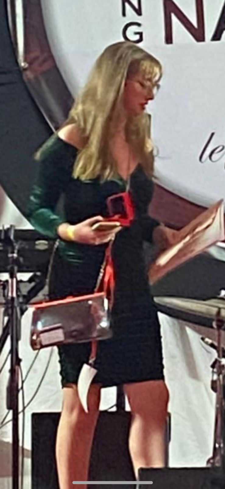
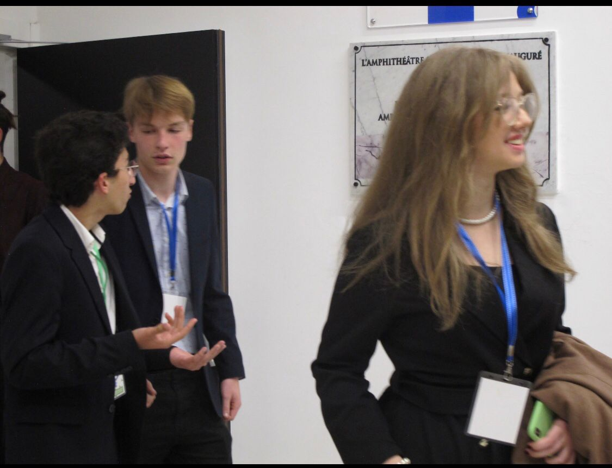
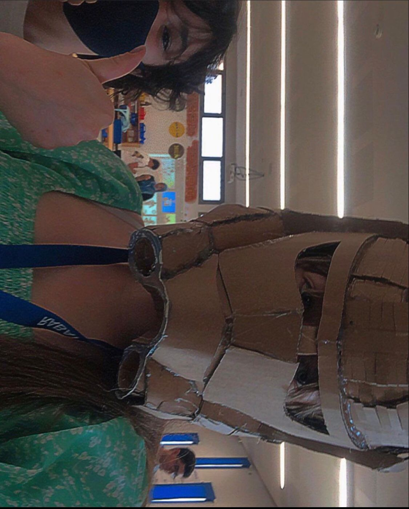

Debate Distinctions: Unveiling Triumphs on the Global Stage

Aya's debate journey has been adorned with accolades, reflecting her exceptional skills on both international and regional stages. Notable achievements include Best Chair at ADDY-MUN 2022, an honorable mention at ENCGT-Azor Model UN 2022, and recognition as a standout delegate at Desmnu Model UN 2022/2023.
Regionally, Aya clinched the Best Delegate title at GSHT-MUN and triumphed in the Speak to Lead competition, securing 1st place in 2019. Her impact also extends internationally, where she earned the title of YouthMUN Best Delegate. Through these achievements, Aya has consistently demonstrated her prowess in diplomacy and public speaking, leaving an indelible mark in the world of debate.
Scholarly Achievements: Aya's Versatility in Academic Excellence

Aya's academic journey shines with versatility, triumphing in the General Culture Contest and Interschool Arabic Poetry Competition, showcasing profound knowledge and linguistic artistry. As Class Valedictorian, her insightful address resonates, embodying academic leadership and inspiration. Beyond individual feats, her commitment to student life earned numerous honorable nominations, reflecting her dedication to fostering a positive academic environment. Aya's narrative is a rich tapestry, blending triumphs with a deep commitment to enhancing the collective academic experience.
Diverse Learning Horizons: Curiosity and Informal knowledge

Aya's educational journey extends beyond traditional bounds, embracing a diverse spectrum of knowledge. Her expertise in quantum computing, validated by an IBM certificate, reflects her engagement with cutting-edge technology. A Stanford certification in scientific writing attests to her ability to articulate complex ideas with clarity.
Delving into the ethical dimensions, her Yale certificate in the moral foundations of politics showcases her commitment to understanding societal frameworks. Her proficiency in artificial intelligence, acknowledged by a Deeplearning certificate on AI for everyone, highlights her grasp of evolving technological landscapes.
Currently navigating Google's course on building a strong network, she continuously enriches her skill set, exemplifying a commitment to lifelong learning.